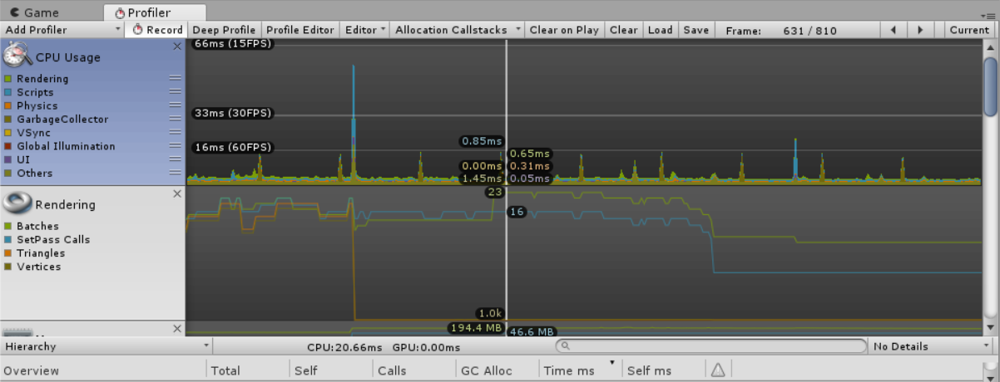

Increasing Performance in Unity3D
Introduction
Hello everyone! My name is Samuel and this is my first article I have ever created and published. Since I did not have a lot of ideas what to write about, I decided to describe you some problems I have encountered during the development of my game for Android - CometRun, which I have published on Google Play Store, and offer you some tips and tricks how to solve those particular problems. I will also provide you with resources I have used when I was solving those issues.
Aimed At
I am a beginner programmer and developer learning IT in my free time, so this article is aimed at people who are beginners as well or they have experienced similar issues as I did. All the others are also welcome to read my blog, but it will not be as informative for you as for the group I mentioned.
Tools for analysing problems

Before I begin to write about specific issues I have experienced during the development, I would like to show you how to discover and
further analyse those partical problems with tools that can really help you provide neccessary information about your performance problems.
Here I will only talk about one tool which is the profiler window provided in Unity3D, but for more information about tools, performance tips and
tricks for Mobile applications you can watch this
video which was also created by Unity3D.
The Unity Profiler Window helps you to optimize your game. It reports for you how much time is spent in the various areas of your game.
For example, it can report the percentage of time spent rendering, animating or in your game logic. You can record your data when game is
in play mode. The more time specific action consumes, the more focus you should provide to this action. So, if you see any areas that spike
more than others you should pay more attention to them and optimize them for better game performance.
My advice: You should mainly focus on CPU Usage, Rendering, Memory and Audio in the Profiler Window, but this is only from my own experience.
For more information about the Profiler Window and tools for optimizing your games click on the links below.
Profiling tools used for specific platforms
Tool for memory profiling
Profiler overview
Audio profiler in the Profiler Window
Too many vertices
First of all, one of most serious problem I had with CPU performance was rendering. I have discovered this problem thanks to the profiler window,
since I could clearly see the spikes my game caused when the number of asteroids increased over time. My asteroids had too many vertices
on main scene which caused lagging. Because I have made those asteroids in Blender,
I quickly solved this problem by decreasing the number of vertices in Blender environment.
The unwanted result was that my asteroids did not have so many details as the had before, but from the user perspective it was not so visible.
Generally speaking, you should aim for no more than 100,000 vertices on mobile devices. On the other hand, a PC manages well even
with several million vertices, but it is still good practice to keep this number as low as possible.
For more information about optimizing graphics performance see the link below.
Optimizing graphics performance
Script optimization

Another recommended advice is to optimize your scripts. I did not really have problems with my scripts, but I have learned a lot of great practices
when I dived into the topic of optimizing scripts. A case in point can be Object pooling.
Object pooling is really helpful when you are creating/instantiating a lot of objects on the scene.
A game can really gain increase in performance after implementing this procedure.
Using objects pooling is much faster than creating and destroying those objects and memory allocation is simpler.
Avoid also using foreach statements, multidimensional arrays, copying the same lines of code on multiple locations in a script -
there is object oriented programming for that, declaring null objects, using declaration statements in update function
(rather give them an exception so when a change occurs your value changes as well instead of replacing value every frame if you understand
what I mean by that, otherwise please read documentation on scripts optimization) and many others good practices.
For more information about optimizing scripts (includes Object pooling example) see the links below.
Optimizing scripts
Scripts optimization tips and tricks
General script optimization
Audio
To increase your performance and decrease the size of your game you should:
- Force audio to mono
- Load it in background
- Choose appropraite Load Type - here is a guide for this
- Override audio for a specific platform you are working with
Texture compression
And last, but not least there is texture compresion which also helps you reduce the size of your game and increase performance. In order to do that follow this steps:
- Use crunch compression
- Override settings for a specific platform you are working with now
- Decrease the Max size of a texture in order to decrease the size of a texture
Resources
Finally, here are some other resources:
Increase game performance
Performance tips for mobile
Performance tips (import settings)
Conclusion
That is all I can provide you with. I hope you have learned something new and solved some of your issues using the guides and links I gathered
here. Good luck with your projects! Thanks for reading this article and have a nice day!
Date: 23.04.2019
Author: Samuel Ivan